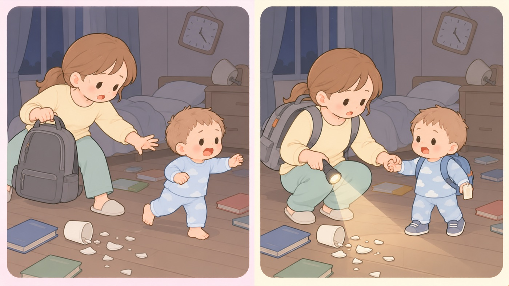

もしものとき
歩けるようになってからの災害への備え
自分で歩く。おむつが外れる前後で備えが変わる。名前と連絡先を身につけさせる
歩けるようになると、避難のしかたも、備えるものも変わります。日本栄養士会は、12〜18か月はごはんで対応としています。大人と同じものが食べられるようになる一方で、自分で歩ける分、はぐれる心配が出てきます。

左は危険な例、右は安全な例です。- すること：名前と保護者の連絡先を、身につけさせる
東京都は、歩くことができる幼児と一緒に避難する場合、万一の迷子に備えて名札をつけておくことが大切だとしています。外から名前が見えない形にします。くわしくは3〜5歳タブ「迷子と、知らない人への対応」にまとめました。 - すること：子どもの靴を、寝室にも置いておく
抱っこやおんぶで避難する場合も、靴をはかせます。割れたガラスや瓦礫の上を歩くことになります。夜に起きた地震では、寝室から出られないことがあります。 - すること：非常食に、子どもが食べ慣れたものを混ぜる
日本栄養士会は、12〜18か月はごはんで対応としています。ただし、慣れない環境では食べないことがあります。普段から食べているものを混ぜておきます。アルファ化米やレトルトは、塩分が強いものを避けます。 - すること：おむつは、外れたあとの分も考えておく
トイレが使えない状況では、おむつに戻ることがあります。おむつが外れた直後の時期は、1サイズ上のものを少し残しておきます。トイレトレーニング中なら、普段より多めに備えます。 - すること：退屈をしのぐものを入れておく
内閣府の避難所運営のガイドラインは、キッズスペースの設置を検討項目に挙げています。実際に設置されるとはかぎりません。音の出ない小さなおもちゃ、絵本、お絵かき帳を、持ち出すものに入れておきます。 - しないこと：体ふきを、大人と同じもので済ませない
こども家庭庁は、入浴や沐浴ができない場合に体を拭くよう求めたうえで、乳幼児はアルコール成分でかぶれることがあるとしています。大人用のウェットティッシュではなく、おしりふきを体ふきにも使えるように多めに備えます。
この年齢で備えるもの（これまでの備えからの差分）
- 子どもの靴（寝室にも1足）
- 名前と連絡先を書いたもの（外から見えない形で）
- 食べ慣れた非常食、子ども用のスプーンとコップ
- おむつ（1サイズ上を少し）、おしりふき（体ふき兼用で多め）
- 音の出ない小さなおもちゃ、絵本
備蓄の日数は、内閣府男女共同参画局が一人あたり最低3日間としています。 この年齢は、大人の分と子どもの分を別に数えます。
🛍 グッズの選び方
PR- 名前と連絡先が、外から見えない形で身につくものを選びます。名前が読めると、知らない人に名前を呼ばれます。
- 非常食は、普段から食べているものを混ぜます。慣れない味のものは、不安な状況では食べません。
- 手元で明かりと情報が取れるものを、1つにまとめます。停電した部屋で子どもを連れて動くには、片手は子どもをつなぐのにふさがります。
- 備蓄は大人の分と子どもの分を別に数えます。内閣府男女共同参画局は、一人あたり最低3日間としています。
- キアーズ 迷子札 インフォバンド（個人情報保護シール付き・手書き・防水）書いた名前をシールで隠せる。手首に巻くAmazonで見る →
- 緊急連絡先カード 二つ折りタイプ 10枚セット（OPP袋つき）二つ折りで中身が見えない。ポケットに入るAmazonで見る →
- 防災グッズ 32点セット（防災士監修・1人用）一式そろう。足りないものを考えずに済むAmazonで見る →
- 防災ラジオ 多機能（手回し・ソーラー充電・5000mAhモバイルバッテリー）手回しとソーラー。停電が続いても使えるAmazonで見る →
- キーホルダーライト（小型LED・4個セット）小型。かばんや鍵に付けられるAmazonで見る →
リンクはAmazonアソシエイトリンクです。当サイトはアフィリエイトプログラムに参加しています。Amazonのアソシエイトとして、当サイトは適格販売により収入を得ています。 選び方の方針
この項目の根拠
- 妊産婦・乳幼児を守る災害対策ガイドライン（東京都福祉保健局・PDF）（新しいタブで開きます）
歩くことができる幼児と一緒に避難する場合は、万一の迷子に備えて名札をつけておくことが大切であること。 - 災害時における乳幼児の栄養支援の手引き（日本栄養士会 JDA-DAT 赤ちゃん防災プロジェクト・PDF）（新しいタブで開きます）
災害時の離乳の目安として、12〜18か月はごはんで対応とされていること。 - 避難所等で生活している妊産婦・乳幼児に対する支援のポイント（こども家庭庁・PDF）（新しいタブで開きます）
入浴や沐浴等ができない場合はタオルやウェットティッシュによる体の清拭等を行うこと。乳幼児はアルコール成分でかぶれることがあるため留意すること。 - 災害対応力を強化する女性の視点 備蓄チェックシート（内閣府男女共同参画局・PDF）（新しいタブで開きます）
備蓄は一人あたり最低3日間の量が望まれること。